게임 해보기
게임 진입점은 out/index.html입니다. 왼쪽 화면에서 바로 하거나 새 창으로 여세요(휴대폰 세로 화면 기준).
개발용 빌드(디버그 패널 포함): out/dev/index.html · 레벨 에디터: out/editor/index.html
홍보 영상
모든 장면은 실제 게임 화면을 프레임 단위로 녹화한 것입니다(봇이 플레이어와 같은 누르기/떼기로 조작). 첫 장면은 강화 없는 첫 판입니다. 자막 파일: trailer.ko.vtt · trailer.en.vtt · trailer.ko.srt · trailer.en.srt
스토어용 (한국어 화면, 자막 트랙 선택)
광고용 · 한국어 자막 입힘
광고용 · 영어 화면 + 영어 자막
스크린샷 (1080×1920)
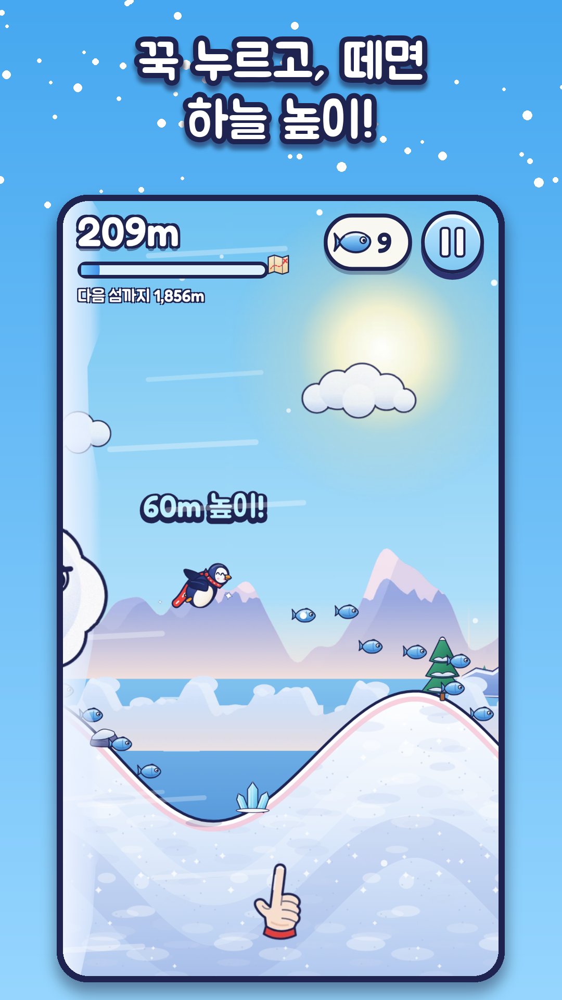
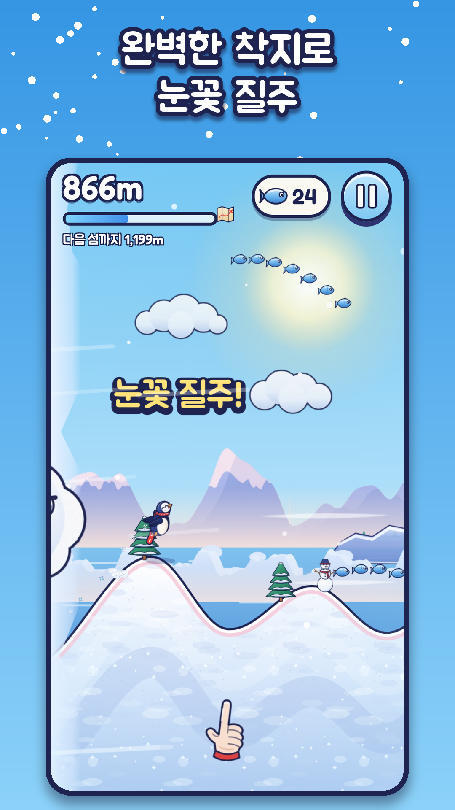
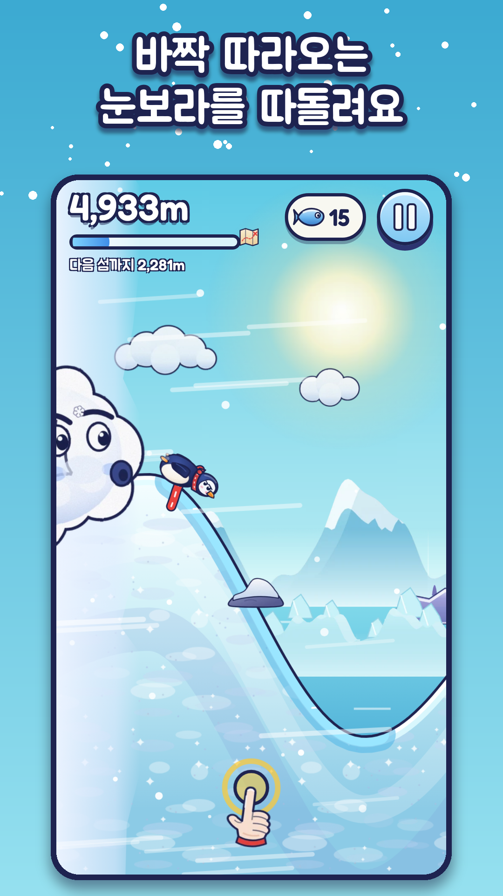
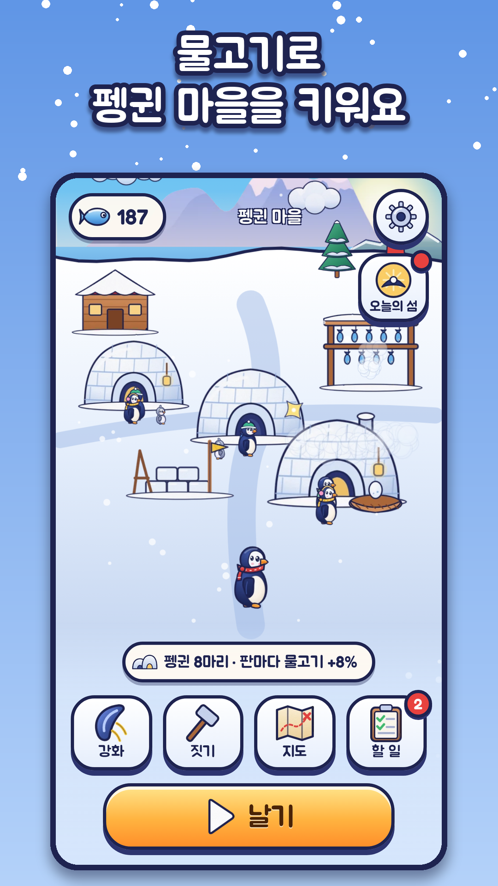
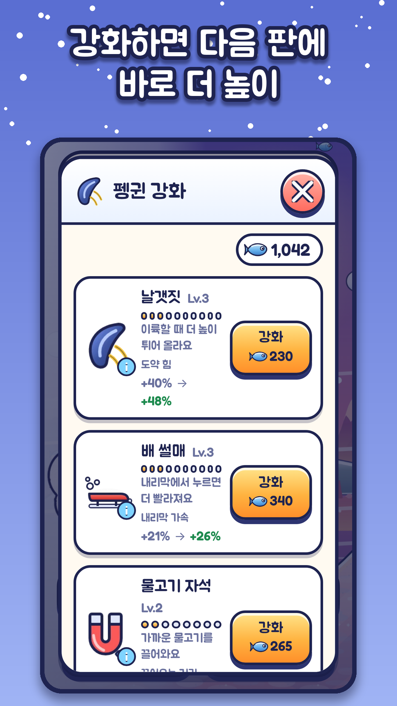
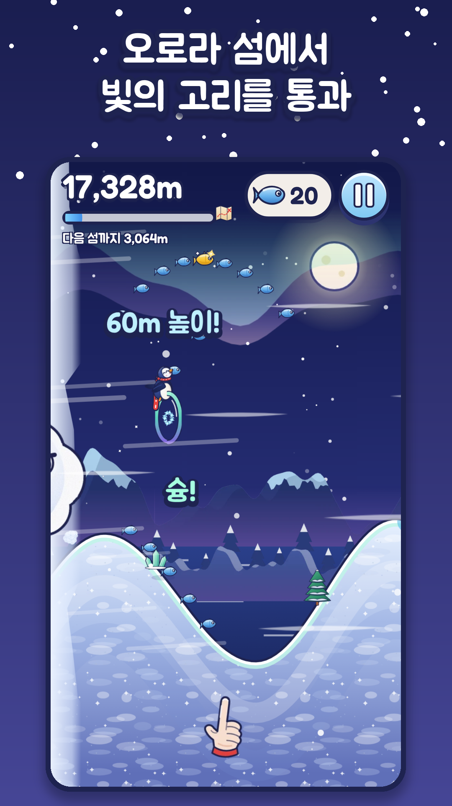
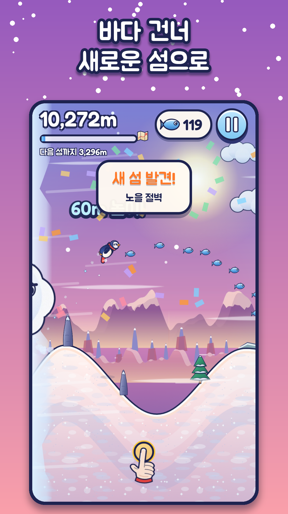
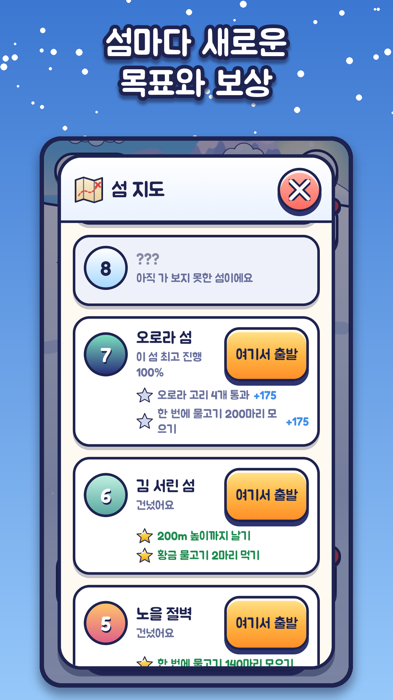
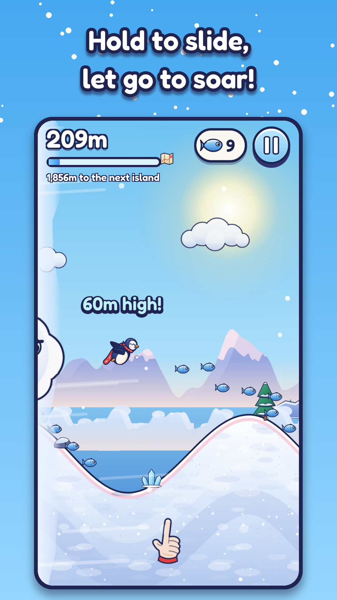
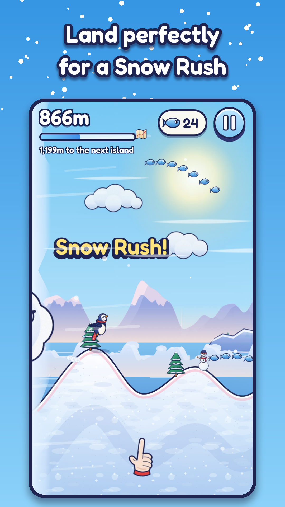
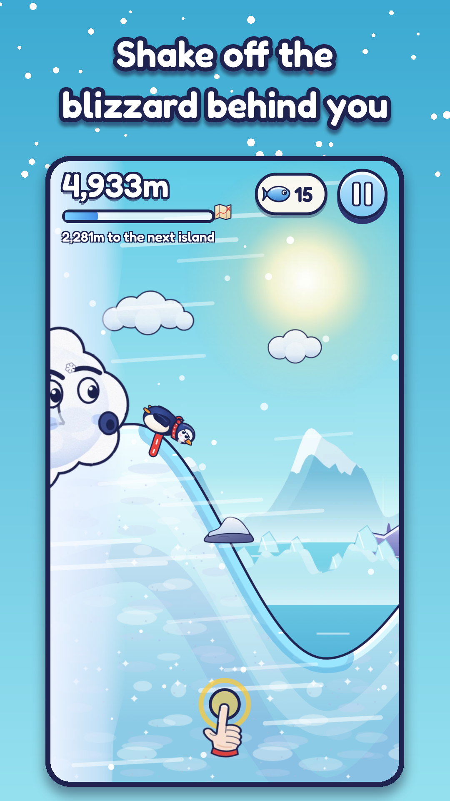
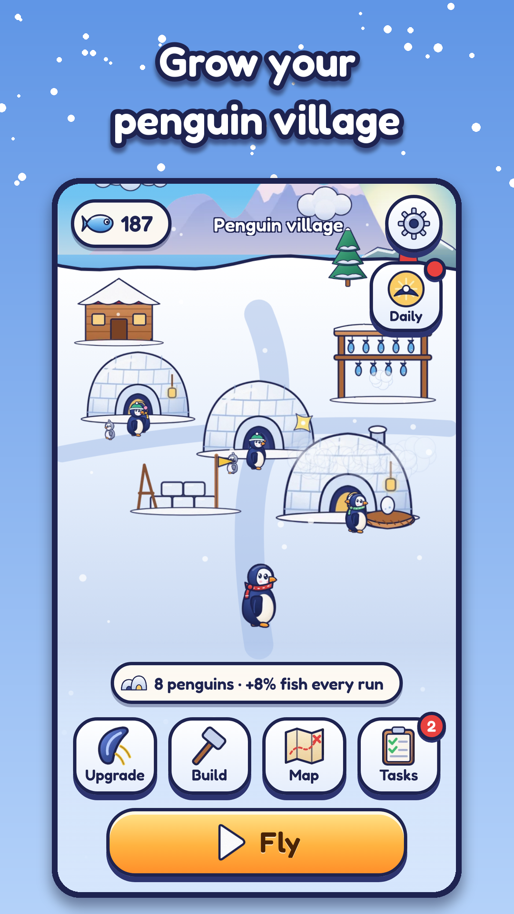
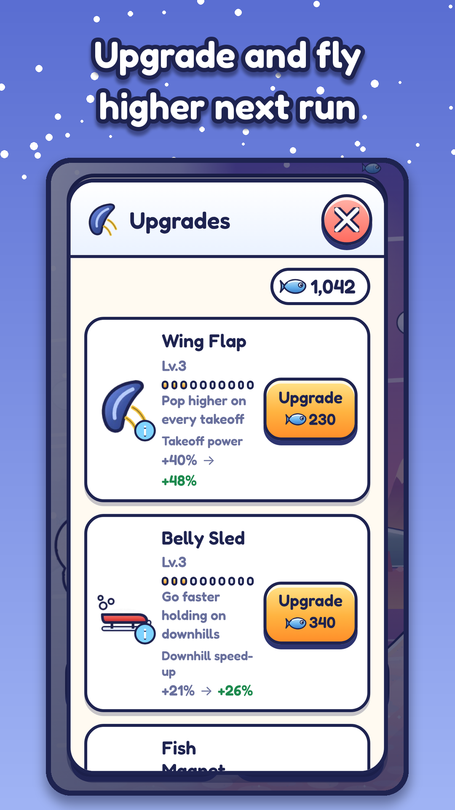
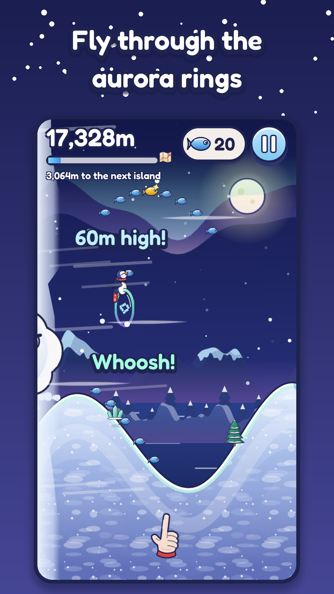
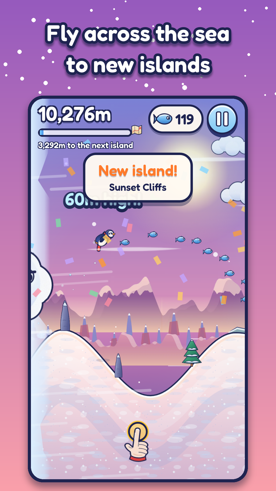
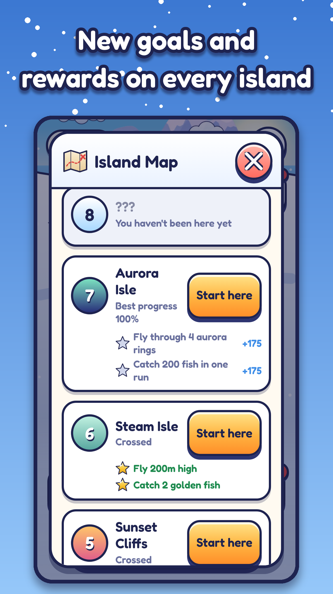
아이콘 · 대표 이미지
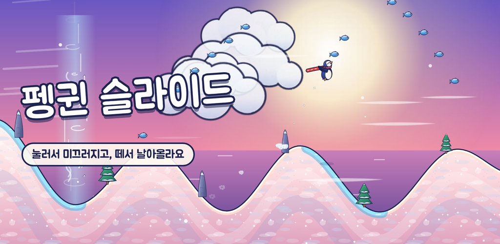

스토어 문구
스토어 문구 — 한국어
앱 이름 (30자 이내)
펭귄 슬라이드
짧은 설명 (80자 이내)
꾹 누르면 미끄러지고, 떼면 날아올라요! 눈보라를 피해 섬을 건너는 한 손가락 펭귄 비행
자세한 설명
손가락 하나로 즐기는 시원한 펭귄 비행!
꾹 누르면 펭귄이 배를 깔고 내리막을 쭉 미끄러지고, 오르막에서 손을 떼면 하늘 높이 솟아올라요. 높이 날수록 하늘의 물고기를 더 많이 먹을 수 있지만, 착지는 그만큼 까다로워져요. 뒤에서는 눈보라가 바짝 따라붙고 있어요. 타이밍을 맞춰 완벽하게 착지하고, 눈보라를 따돌리고, 바다 건너 다음 섬까지 날아가 보세요.
■ 한 번만 해 보면 아는 조작
- 누르기: 내리막에서 쭉 미끄러지기, 공중에서는 빠르게 내려오기
- 떼기: 오르막에서 하늘로 날아오르기
- 경사에 맞춰 부드럽게 내려앉으면 '완벽해요!' — 세 번 이어 하면 눈꽃 질주가 시작돼요
■ 날마다 자라는 펭귄 마을
- 모은 물고기로 이글루를 지으면 펭귄 가족이 이사 오고, 알에서 아기 펭귄이 태어나 자라요
- 물고기 건조대, 썰매 공방, 등대, 온천, 축제 무대 등 20가지 건물로 마을을 꾸며요
■ 판마다 느껴지는 강화
- 날갯짓, 배 썰매, 물고기 자석, 활공, 털목도리 — 다섯 가지 강화로 다음 판에 바로 더 높이, 더 멀리
- 첫 판이 끝나면 바로 첫 강화를 할 수 있어요
■ 아홉 개의 섬, 그리고 끝없는 하늘
- 첫 눈밭부터 얼음 호수, 바람 계곡, 노을 절벽, 김 서린 섬, 오로라 섬, 구름 위 하늘, 하늘 끝까지
- 섬마다 얼음길, 바람, 간헐천, 오로라 고리 같은 새로운 재미가 기다려요
- 아홉 번째 섬 너머에는 끝없이 이어지는 하늘길이 있어요
■ 매일 돌아올 이유
- 출석 선물, 오늘의 할 일, 매일 바뀌는 '오늘의 섬'
- 쉬는 동안에도 건조대에 물고기가 쌓여요
■ 마음 편하게
- 광고 없음, 인앱 결제 없음
- 기다림이나 횟수 제한 없이 원하는 만큼 다시 날 수 있어요
- 한국어 / 영어 지원, 진동·음악·효과음 따로 끄기, 그래픽 품질 설정
키워드
펭귄, 캐주얼, 원터치, 한손게임, 슬라이드, 비행, 눈, 섬, 마을 키우기, 아케이드
카테고리
게임 > 캐주얼 (보조: 아케이드)
콘텐츠 등급 참고
폭력·선정성·도박 요소 없음. 광고·결제·채팅·위치 정보 없음.
이번 버전 새 소식
첫 출시! 아홉 개의 섬과 펭귄 마을이 기다려요.
Store listing — English
App name (max 30 characters)
Penguin Slide
Short description (max 80 characters)
Hold to slide, let go to soar! Outrun the blizzard across islands, one finger.
Full description
A breezy one-finger penguin flight.
Hold the screen and your penguin belly-slides down the hill. Let go on the way up and it shoots into the sky. The higher you fly, the more fish you can catch up there — but the trickier the landing. And the blizzard is always right behind you. Time your landings, shake off the blizzard and fly across the sea to the next island.
■ Controls you get in one try
- Hold: slide fast downhill, or drop faster in the air
- Let go: launch off the slopes into the sky
- Touch down along the slope for a "Perfect!" — three in a row starts a Snow Rush
■ A penguin village that grows every day
- Spend fish on igloos and penguin families move in; their eggs hatch and the chicks grow up
- 20 buildings to place, from the Fish Rack and Sled Workshop to the Lighthouse, Hot Spring and Festival Stage
■ Upgrades you can feel on the very next run
- Wing Flap, Belly Sled, Fish Magnet, Glide and Cozy Scarf — fly higher and farther right away
- Your first upgrade is ready as soon as your first run ends
■ Nine islands and an endless sky
- From First Snow to Glass Lake, Windy Valley, Sunset Cliffs, Steam Isle, Aurora Isle, Above the Clouds and Sky's End
- Ice lanes, wind, geysers and aurora rings bring something new on every island
- Beyond the ninth island, the sky road goes on forever
■ Reasons to come back
- Daily Gift, Today's Tasks and a new Island of the Day every day
- Your Fish Rack keeps collecting fish while you're away
■ Play your way
- No ads, no in-app purchases
- No waiting and no play limits — fly again as often as you like
- Korean and English, separate switches for vibration, music and sound, graphics quality setting
Keywords
penguin, casual, one touch, one hand, slide, flying, snow, islands, village builder, arcade
Category
Games > Casual (secondary: Arcade)
Content rating notes
No violence, sexual content or gambling. No ads, payments, chat or location data.
What's new
First release! Nine islands and a penguin village are waiting.
기획서 · 보고서
펭귄 슬라이드 (Penguin Slide) — 기획서
이 문서는 반복할 때마다 고치는 살아 있는 문서입니다. 맨 아래 변경 이력에 무엇을 왜 바꿨는지, 시도했다가 버린 아이디어를 남깁니다.
1. 한 줄 소개
날지 못하던 꼬마 펭귄이 눈 언덕을 배로 미끄러지고 하늘로 튀어 올라, 뒤쫓는 눈보라보다 멀리 — 언젠가 하늘 끝 섬까지 날아가는 원터치 세로형 게임.
2. 누가, 언제, 왜 재미를 느끼나
| 누가 | 어떤 순간 | 왜 |
|---|---|---|
| 짧은 틈에 폰을 켜는 캐주얼 플레이어 | 내리막에서 꾹 눌렀다가 골짜기 바닥에서 손을 떼는 순간, 펭귄이 "휙" 솟구칠 때 | 내 타이밍이 그대로 속도와 높이로 돌아온다. 규칙은 하나지만 언덕 모양이 매번 달라 "지금!"을 다시 찾아야 한다 |
| 같은 사람, 몇 판 뒤 | 강화 후 같은 언덕을 지난 판 궤적(유령선)보다 확연히 높이 넘을 때 | 성장이 눈에 보인다. "한 판만 더" |
| 기록을 노리는 사람 | 눈보라가 등 뒤에 바짝 붙었다가 리듬을 되찾아 떼어낼 때 | 아슬아슬함과 안도 |
| 오늘 그만둔 사람 | 다음 날 마을에 들어가 알이 부화해 있고, 건조대에 물고기가 쌓여 있을 때 | 내가 없는 사이에도 마을이 살아 있다 |
3. 참고 게임 — 배운 것 / 다르게 한 것
| 참고 | 배운 것 | 다르게 한 것 |
|---|---|---|
| Tiny Wings | 누르면 무거워지고(내리막 가속) 떼면 가벼워지는(오르막 도약) 원터치 물리, 완벽 착지 연쇄 → 피버 | 가로 → 세로 화면. 세로 공간을 "솟구침"의 무대로 쓰고, 높이 날수록 카메라가 물러나 지나온 언덕과 다음 섬이 한눈에 보이게 함. 해가 지는 대신 얼굴 있는 눈보라가 쫓아옴 |
| Ski Safari | 등 뒤에서 다가오는 눈사태의 압박, 화면 왼쪽 끝의 위협 | 잡혀도 벌이 아니라 "오늘은 여기까지". 눈보라 정령이 펭귄을 눈덩이로 굴려 보내는 귀여운 마무리. 거리·물고기는 모두 남음. 리듬이 좋으면 눈보라가 화면 밖으로 밀려나되 너무 멀어지지 않게(고무줄) 해 긴장을 유지 |
| Learn to Fly | 판 사이 업그레이드로 "매번 조금 더 멀리". 첫 판 직후 첫 강화 | 강화가 실력을 대신하지 않도록 도약 강화는 이륙 속도에 비례(타이밍이 나쁘면 효과도 작음). 강해질수록 더 높은 물고기 길·바람길을 노릴 수 있고, 높이 날수록 착지가 어려워지는 위험이 커짐 |
| 마을 키우기류 | 판 밖에서 눈에 보이게 커지는 공간 = 재방문 이유 | 마을이 그냥 장식이 아니라 코어에 돌아옴: 마을 펭귄 수만큼 물고기 보너스, 등대가 출발 섬 선택을 열어 줌, 건조대는 쉬는 동안 물고기를 모음 |
4. 조작
- 화면 아무 곳이나 누르고 있기 → 펭귄이 배를 깔고 무거워져 내리막에서 빠르게 미끄러짐 / 공중에서는 빠르게 내려옴(다이브).
- 손 떼기 → 가벼워져 오르막을 타고 하늘로 날아오름.
- 그 외 조작 없음. 세로 화면, 한 손 엄지로 화면 아래쪽 어디를 눌러도 됨. 펭귄과 지면은 화면 중상단에 있어 손가락이 가리지 않음.
손맛 규칙 (물리)
- 내리막에서 누름 → 경사 방향 가속이 커짐(무거워짐).
- 오르막에서 누름 → 감속(벌). 그래서 "골짜기 바닥에서 떼기"가 정답 리듬.
- 떼고 있으면 언덕 꼭대기 곡률에서 원심력이 중력을 이기는 순간 자연스럽게 이륙. 빠를수록 가파른 각도에서 떠서 높이 솟음.
- 완벽 착지: 내리막 경사와 비행 방향이 거의 일치하게 내려앉으면 가속 + 반짝임. 3연속이면 눈꽃 질주(피버). 언덕 꼭대기를 살짝 스치는 짧은 뜀(0.35초 미만 또는 11m 미만)은 비행으로 치지 않아 판정·연속에 영향 없음.
- 쿵 착지: 오르막에 처박으면 속도를 잃고 어지러운 별. 이해 가능한 실패.
5. 한 판의 흐름 (목표 30초 ~ 3분)
- 출발: 펭귄이 첫 언덕 꼭대기에서 출발. 첫 판에는 손가락 안내만 나오고 글은 최소.
- 리듬 타기: 언덕마다 누르고-떼기. 물고기는 낮은 길(안전, 적음)과 높은 길(위험, 많음, 황금 물고기)에 배치.
- 눈보라: 화면 왼쪽 끝에서 다가옴. 가까워지면 화면 가장자리에 서리가 끼고 바람 소리가 커지며 펭귄이 뒤를 돌아봄.
- 섬 끝: 큰 도약대 → 바다 위를 날아 다음 섬으로(카메라가 물러나되 펭귄이 잘 보이는 거리 유지, 다음 섬이 앞에서 다가오고 새 섬 이름이 뜸). 눈보라는 섬 입구에서 다시 뒤로 밀려남.
- 잡힘: 눈보라 정령이 펭귄을 눈덩이로 감싸 데굴데굴 → "오늘은 여기까지!" → 결과 화면.
- 결과: 거리·물고기·최고 기록·다음 섬까지 남은 거리·플레이 진단 한 줄 → [다시 날기] 가 가장 큰 버튼. 강화할 수 있으면 [강화] 버튼에 표시.
6. 콘텐츠: 섬(레벨) 구성
섬 하나 = 레벨 하나. 섬 끝 도약대에 닿으면 그 섬을 깬 것. 섬마다 새 요소를 하나씩 도입하고, 다음 섬에서 익힌 요소를 섞음.
| # | 섬 | 새 요소 | 역할 |
|---|---|---|---|
| 1 | 첫 눈밭 | 누르기/떼기, 완벽 착지 | 튜토리얼, 쉬움 |
| 2 | 소나무 언덕 | 높은 물고기 길, 황금 물고기 | "높이 날면 더 번다" 발견 |
| 3 | 얼음 호수 | 얼음 비탈(누르면 더 빨라짐) | 새 발견 |
| 4 | 바람 계곡 | 상승 바람(떼고 있으면 떠오름) | 생각하게 만드는 판 |
| 5 | 노을 절벽 | 긴 급경사 + 얼음/바람 조합 | 숨 고르기 후 시험 |
| 6 | 간헐천 섬 | 간헐천(밟으면 높이 튐) | 새 발견 |
| 7 | 오로라 섬 | 오로라 고리(통과하면 가속) | 높은 길 선택 |
| 8 | 구름 위 하늘 | 구름 언덕(폭신한 착지) | 하늘 판타지 |
| 9 | 하늘 끝 | 모든 요소 | 최종 섬, 이후 끝없는 하늘(무한) |
- 첫 비행 물고기 줄: 섬마다 첫 큰 비행 경로(시뮬레이터로 뽑은 실제 경로)에 물고기 줄 두 갈래(보통 높이 / 더 높은 길). 이 물고기는 자석 없이도 13m 안에서 살짝 끌려옴. 첫 섬은 시작 언덕을 길게(64m 높이, 96m 길이) 해 첫 누르기가 약 1초, 첫 비행이 누구에게나 일어나게 함.
- 오늘의 섬: 날짜로 정해지는 특별 섬 + 하루 한 가지 조건(예: 얼음 많은 날). 하루 첫 완주 보상.
- 끝없는 하늘: 9번 섬 이후 무작위 구간 조립으로 무한 진행(기록 경쟁용).
7. 성장과 재방문
재화
- 물고기 하나뿐. 게임 안에서만 벌고 씀. 결제·광고·유료 재화 없음.
- 버는 곳: 공중/지면 물고기, 황금 물고기(10), 이동 거리 보너스, 섬 첫 도달 보너스, 높이 보너스, 일일 미션, 출석, 오늘의 섬, 건조대.
- 쓰는 곳: 펭귄 강화(5종 × 여러 단계), 마을 건물(이글루, 건조대, 등대, 꾸미기 …).
펭귄 강화 (판 사이)
| 강화 | 효과 | 열리는 때 |
|---|---|---|
| 날갯짓 | 이륙할 때 위로 더 튀어 오름(이륙 속도 비례) | 첫 판 직후 |
| 배 썰매 | 내리막 가속, 최고 속도 | 2판째 결과 |
| 물고기 자석 | 주변 물고기를 끌어옴 | 섬 2 도착 |
| 활공 | 떼고 있을 때 천천히 떨어짐 | 섬 3 도착 |
| 털목도리 | 눈보라에 잡혀도 한 번 버팀 | 섬 4 도착 |
펭귄 마을
- 첫 판이 끝나면 첫 이글루 공사가 시작됨(바로 지을 수 있는 가격).
- 이글루마다 펭귄 가족이 이사 오고 알 하나 → 다음 판이 끝나면 부화 → 다음 날 자람.
- 마을 펭귄 1마리당 판마다 물고기 +1%.
- 건조대: 쉬는 동안 물고기가 쌓임(최대 12시간분).
- 등대: 지도에서 도달한 섬부터 출발할 수 있음.
재방문 장치와 열리는 조건
| 기능 | 열리는 조건 |
|---|---|
| 강화 | 첫 판 종료 |
| 마을 | 첫 판 종료 |
| 일일 미션(3개) | 3판 완료 |
| 지도(섬 선택) | 등대 건설 |
| 출석 보상 | 둘째 날 접속 |
| 오늘의 섬 | 섬 3 도달 또는 둘째 날 |
| 주말 축제 | 셋째 날 이후 주말 |
- 첫날에는 플레이를 막는 제한·대기 없음. 판 수 제한, 에너지 없음.
8. 막혔을 때 돕는 장치
- 결과 화면의 진단 한 줄: 오르막에서 누르고 있던 비율, 쿵 착지 수 등을 보고 구체적으로 알려 줌.
- 같은 섬에서 3번 연속 잡히면 강화 추천 + 지난 판 궤적 표시.
- 털목도리 강화(한 번 버티기).
9. 아트 방향
- 손으로 그린 동화책 같은 북극: 두껍고 부드러운 남보라색 외곽선, 채도 높은 그라데이션, 종이 결 질감, 빛 번짐. 캐릭터는 큰 눈과 말랑한 늘어남/찌그러짐.
- 팔레트: 하늘 청록 → 복숭아빛 지평선, 눈은 흰색 + 라벤더 그림자, 펭귄 남색/크림/주황 부리, 빨간 목도리가 정체성.
- 모든 스프라이트는 같은 SVG 리그에서 생성 → 어느 화면에서도 같은 펭귄.
- UI도 같은 외곽선·질감·폰트. 이모지 사용 안 함.
10. 사운드 방향
- 밝고 장난스러운 실로폰·플럭·패드 위주 배경음, 오래 들어도 거슬리지 않는 낮은 템포.
- 효과음은 계층화: 물고기 연속 획득은 음계가 올라감, 완벽 착지는 종소리, 눈꽃 질주는 화음 확장.
- 진동: 약(완벽 착지) / 중(눈꽃 질주, 새 기록) / 강(섬 도착, 잡힘). 설정에서 끔.
11. 성공 지표와 이탈 판별 기준
→ 상세는 release/docs/analytics.md 참고 (개발 중 작성).
변경 이력
v0.1 — 최초 기획
- 섬 = 레벨, 한 판 = 섬 1부터 잡힐 때까지 이어 달리기로 정의.
- 재화 1종(물고기)으로 단순화. 2종(황금 물고기 별도 재화)은 첫날 이해 부담 때문에 보류.
v0.2 — 물리 프로토타입 + 봇 플레이테스트 (반복 1)
- 가설: Tiny Wings식 "누르면 중력 증가" 하나로 내리막 가속/오르막 이륙이 자연스럽게 나온다.
- 결과: 경사·곡률 기반 이륙 판정으로 동작. 첫 수치(중력 2000, 누름 2.6배)는 너무 빨라 다음 언덕을 넘어 오르막에 처박히는 일이 잦았음 → 중력 1500, 누름 1.9배로 낮추고 언덕을 가파르게(높이/폭 ≈ 0.8) 바꿈.
- 발견: 이륙 직후 같은 프레임에 재착지하는 떨림 → 이륙 판정을 0.07초 지연 확정, 공중 적분을 정확한 포물선 식으로 교체.
- 버린 것: 봇의 단순 경사 규칙만으로 '숙련자'를 흉내 내는 방식 → 1초 앞을 시뮬레이션해 고르는 계획형 봇(expert)으로 교체(검증·트레일러 시연용).
v0.3 — 강화가 정말 "더 멀리"로 이어지는가 (반복 2)
- 가설: 날갯짓(위로 튀기)만 강해져도 멀리 간다.
- 결과(봇 측정): 높이만 늘고 평균 속도는 거의 그대로, 초보는 효과가 0에 가까움 → "강화해도 그대로" 문제.
- 변경: 날갯짓에 앞으로 미는 힘 30% 추가, 배 썰매는 내리막 가속 + 저항 감소, 활공은 공기저항 감소까지. 1단계 효과를 크게(+18%), 뒤로 갈수록 체감(Learn to Fly식).
- 결과: 평균 실력 봇 기준 강화 0→1→2단계에서 평균 속도 +22%, +41%.
v0.4 — 진행 속도 시뮬레이션 (반복 3, 가장 큰 수정)
- 실력이 점점 느는 가상 플레이어(초보→중급, 학습 시간상수 8판)가 실제 경제 규칙으로 물고기를 벌고 쓰는 시뮬레이터(
tools/run-sim.mjs)를 만들어 처음 150판을 돌림. - 발견 1: 첫날 17분 만에 9개 섬을 모두 넘고 30분 안에 강화가 끝남 → 콘텐츠가 첫날 소진.
- 발견 2: 뒤쪽 섬에서 출발하면 5~9초 만에 잡히는 판이 많음. 원인: 눈보라 간격이 '거리'로 고정 → 고속 구간에서는 쿵 착지 한 번에 1초 안에 잡힘.
- 발견 3: 고속에서 속도가 눈덩이처럼 불어 어떤 판은 섬 12개를 연달아 통과(편차 과다).
- 변경: 눈보라 간격을 시간(초) 기준으로(최대 2.4초 뒤, 위험 0.85초), 출발 섬에서만 10초 예열(65%→100%), 뒤쪽 섬 출발 시 썰매 밀어주기 + 내리막 중간에서 시작, 최고 속도 상한/고속 저항 상향, 쿵 착지 후 최소 속도 32% 보장, 섬마다 첫 2개 언덕은 도움닫기 구간.
- 경제: 강화 비용 성장률 1.52 → 2.05~2.4, 거리 보너스 0.04 → 0.01/m, 섬 첫 도달 보너스 축소, 마을 비용 ×2.
- 결과(6개 시드 중앙값): 섬2 2판, 섬5 14판(약 20분), 섬7 26판(31분), 섬9 38판(39분), 끝없는 하늘 63판(53분). 150판(약 110분) 후에도 강화 f6/s6, 마을 14/20 → 장기 목표 유지.
- 버린 것: 섬별 눈보라 속도를 자동 이분 탐색으로 맞추는 튜너 → 시드 노이즈 때문에 난이도가 들쭉날쭉(섬3이 섬2보다 쉬움 등). 단조 증가 곡선을 사람이 정하고 경제로 속도를 맞추는 방식으로 변경.
v0.5 — 출시 화면 캡처 중 발견한 UI 문제 (반복 4)
- 실제 게임을 프레임 단위로 진행시켜 녹화하는 캡처 기능(개발 빌드 전용)을 만들고, 그 화면을 장면별로 검토하면서 게임 쪽 문제를 고침.
- 360×640 소형 화면에서 결과 화면 아래 버튼이 잘리고 "화면을 누르면 넘어가요"가 버튼에 겹침 → 720px 이하 화면용 간격·글자 크기 축소, 버튼 아래 여백 확보. (360×640, 375×667, 430×932 ko/en에서 버튼 하단이 화면 안에 들어오는 것 측정으로 확인)
- 마을 짓기 목록이 화면 전체를 덮어 새 건물이 올라오는 장면이 가려짐 → 짓는 순간 목록을 닫고 건물이 '뿅' 올라오게. 짓기 알림이 [날기] 버튼을 가리던 문제도 수정.
- "40m 높이!", "완벽해요!" 같은 글자가 월드 좌표에 고정돼 빠를 때 화면 왼쪽으로 밀려 잘림 → 펭귄을 따라다니고, 한 번에 하나만, 화면 안에 들어오게, 서로 겹치지 않게.
- 섬 사이 바다 건너기 때 카메라가 너무 멀어 펭귄이 몇 픽셀로 보임 → 펭귄이 잘 보이는 거리 유지.
v0.6 — 첫 판의 첫 비행 (반복 5, D1 핵심)
- 가설: 첫 판에서 처음 날아오를 때 하늘의 물고기를 먹는 순간이 있어야 "또 하고 싶다"가 생긴다.
- 측정(봇 12명 × 3종 실력): 첫 섬 시작 언덕이 짧고(내리막 0.7초) 꼭대기에서 출발해 처음 0.4초는 의미 없는 깡충 뛰기 → 초보 6/8, 중급 3/8, 숙련 1/8만 첫 비행(25m 이상)을 경험. 첫 비행 물고기는 0~1마리.
- 변경: 첫 섬 시작 언덕을 높이 64m·길이 96m로 늘림(누르고 있는 시간 약 1초), 모든 섬의 첫 큰 비행 경로에 물고기 줄 2갈래(보통 높이 / 더 높은 길, 높을수록 더 많이) — 실제 비행 경로를 시뮬레이터로 뽑아 배치(
tools/fish-lines.mjs). 이 물고기는 자석이 없어도 13m 안에서 살짝 끌려옴. - 결과: 첫 섬에서 모든 실력의 봇이 8/8 첫 비행(57~72m), 첫 비행 물고기 평균 6~9마리(12명 중 12명이 3마리 이상). 초보의 첫 섬 통과율 38% → 88%(첫 판에 새 섬 도착 경험).
- 함께 고친 것: 꼭대기 스치기도 '완벽 착지'로 쳐서 눈꽃 질주가 공짜로 차던 문제 → 0.35초·11m 미만은 판정 없음. 높이 표시를 30/60/100/150m…로 촘촘하게(보너스 총량은 거의 같게).
- 검증: 9개 섬 모두 통과 기준 유지(숙련 100%, 중급+강화2단계 63~100%). 섬9는 이전부터 기준 미달(50%)이었음을 발견해 눈보라 속도 1740→1680.
v0.7 — 홍보 영상 검토 반영 (반복 6)
- 영상 프레임을 시간 구간별로 뽑아 별도 검토 에이전트에게 맡김(23개 지적). 게임 자체 문제로 이어진 것:
- 손가락 아이콘이 작은 화면에서 가운데 손가락처럼 보임 → 검지가 주먹 옆에서 올라오고 엄지가 따로 보이게 다시 그림(튜토리얼에도 같은 그림 사용).
- 높은 비행에서 높이 글자가 상단 HUD와 겹침 → 화면 위쪽에서는 펭귄 아래에 표시.
- 눈꽃 질주 글자가 흰 눈 위에서 잘 안 보임 → 금색으로.
- 강화 단계 칸이 "0000"처럼 읽힘 → 막대 조각 형태로.
- 영상 구성 변경: 첫 장면을 첫 판(강화 없음)의 실제 첫 비행 → 완벽 착지 3연속 → 눈꽃 질주까지 끊지 않고, 결과→강화→마을→짓기를 한 세션으로 이어 붙이고, 섬마다 대표 순간(바람·간헐천·오로라 고리·구름), 마지막에 행동 유도 문구. 소리 없이 보는 광고용으로 자막을 입힌 판(한/영)과 영어 화면판을 따로 만듦.
- 버린 것: 첫 장면만 카메라를 확대하는 연출 → 실제 첫 판 화면과 달라지므로 사용하지 않음(카메라 연출은 '시네마틱' 한 컷에만).
- 2차 검토(같은 검토 에이전트가 23개 항목 재확인) → 남은 문제: 자막이 펭귄이 달리는 언덕 높이를 가림, 마을 장면 자막이 "이글루 완성!"을 가림, 바람·간헐천이 잘 안 보임. 바꾼 것:
- 자막 위치를 장면마다 자동 선택. 녹화할 때 프레임마다 펭귄의 화면 위치를 기록해 두고, 펭귄이 가장 적게 지나가는 띠(하늘 띠/70%/아래쪽)를 고름.
- 첫 장면 중간을 같은 판 안에서 0.9초 잘라내고, 남은 시간을 새 섬 도착 배너와 끝 카드에 씀.
- 팝업 열리는 페이드는 탭 순간 잘라 붙임.
- 게임 쪽도 함께 고침:
- 바람 기둥: 하늘색 띠와 위로 오르는 줄무늬를 넣고, 바람을 탈 때 펭귄 주위에 바람 줄기가 생김.
- 간헐천: 위로 솟는 증기 기둥과 물방울, 화면이 번쩍임.
v0.8 — 최종 QA (반복 7)
- 배포 빌드로 첫 사용자 흐름을 자동 점검(작은 폰 360×640 한국어 10판, 큰 폰 430×932 영어 7판). 탭·누르기는 실제 입력 경로로 보내고, 조종만 봇이 맡음.
- 발견: 한 판에 기능이 여러 개 한꺼번에 열리면(섬 3 도착 등) 결과 카드가 길어져 360×640에서 [다시 날기]·[강화]·[마을]이 화면 밖으로 밀림.
- 변경: 버튼을 카드 밖의 고정 하단 영역으로 옮겨 어떤 내용이 와도 밀리지 않게 하고, 카드에는 새 기능 칩을 최대 3개만(나머지는 "새 기능 N개가 더 열렸어요"). 또
closeAll뒤에도 알림이 아래 [날기] 버튼 위에 남던 문제를 고침. - 발견 2: 다음 날 다시 켜면 "다시 왔군요!" 알림이 출석 선물 팝업의 제목 위에 겹침 → 팝업을 닫은 뒤 마을 화면에 있을 때만 보여 주고, 곧바로 판을 시작하면 생략.
- 함께 한 것: 첫 화면을 막던 글꼴 CSS(약 120 KB)를 따로 떼어 비차단으로 불러오고 게임 스크립트를 defer → Lighthouse 첫 표시 3.1초 → 1.7초.
- 결과: 두 기기 모든 판에서 결과 버튼이 화면 안, 자동 넘침 검사 0건, 콘솔 오류 0건(보고서 QA 절).
펭귄 슬라이드 — 결과 보고서
이 문서는 무엇을 만들었고, 어떻게 확인했고, 무엇을 확인하지 못했는지를 적은 보고서입니다. 확인 방법이 봇·시뮬레이터·헤드리스 브라우저인 항목은 그렇게 적었습니다. 실제 휴대폰과 실제 사람으로는 아무것도 확인하지 않았습니다.
0. 한눈에 보기
- 게임:
out/index.html— 세로 화면, 한 손가락(누르기/떼기)만 쓰는 2D 펭귄 비행 게임. HTML5(Canvas 2D + DOM UI)로 만들어 브라우저·웹뷰에서 바로 실행됩니다. 서버 없이 파일로 열어도 동작합니다(file://). - 콘텐츠: 섬 9개 + 끝없는 하늘(무한 모드), 오늘의 섬(매일 바뀌는 섬), 강화 5종(각 5~10단계), 마을 건물 20개, 출석 선물 7일 주기, 오늘의 할 일, 섬별 목표, 등대(출발 섬 고르기), 막혔을 때 돕는 장치, 결과 화면 팁.
- 출시 준비물:
out/release/— 스토어 문구(ko/en), 아이콘, 대표 이미지, 스크린샷 8장(ko, en 따로), 홍보 영상 3종(스토어용·광고용 ko·광고용 en), 자막 4개, 기획서, 이 보고서, 분석 문서, 확인용 페이지out/release/index.html. - 개발 도구: 레벨 에디터(
out/editor/index.html), 개발 빌드 + 디버그 패널(out/dev/index.html), 레벨 자동 검증·진행 속도 시뮬레이터·영상 캡처 등tools/아래 스크립트.
1. 만든 것
게임
| 영역 | 내용 | 위치 |
|---|---|---|
| 조작·물리 | 누르면 무거워져 내리막 가속 / 공중 다이브, 떼면 오르막에서 이륙. 곡률 기반 이륙, 정확한 포물선 비행, 착지 판정(완벽/좋음/쿵), 3연속 완벽 → 눈꽃 질주 | src/core/run.js |
| 눈보라 | 시간 간격 기준 추격(최대 2.4초 뒤), 출발 섬 예열, 근접 시 서리·바람 소리·얼굴 표정, 잡히면 "오늘은 여기까지" | src/core/run.js, src/game/actors-render.js |
| 섬 | 섬별 데이터 파일 9개(지형 점, 물고기, 얼음·바람·간헐천·오로라 고리·구름 지형, 장식, 눈보라 속도, 목표) | src/data/levels/island01~09.json |
| 무한·오늘의 섬 | 섬 9 이후 끝없이 생성, 날짜로 정해지는 오늘의 섬(규칙 변형 포함) | src/core/endless.js, src/meta/daily.js |
| 성장 | 물고기 1종 재화. 강화(날갯짓·배 썰매·물고기 자석·활공·털목도리), 마을(이글루 → 가족 → 알 → 아기 펭귄 성장, 건조대 방치 수입, 온천, 축제, 등대, 썰매 공방 등 20개) | src/meta/economy.js, src/data/balance.json, village.json |
| 재방문 | 출석 선물(7일), 오늘의 할 일 3개, 오늘의 섬, 건조대, 주말 축제, 기능은 진행에 따라 하나씩 열림 | src/meta/daily.js, daily.json |
| UI | 타이틀(게임이 뒤에서 스스로 플레이), 마을 화면, 결과 화면, 팝업 10종, HUD, 알림, 한/영 | src/ui/ |
| 연출 | 손맛 효과(입자·글자·흔들림·슬로모션·플래시), 카메라 줌아웃, 배경 시차, 섬 생물군 9종 | src/game/ |
| 소리 | 합성으로 만든 효과음 30종 + 음악 3곡(달리기·피버 레이어·마을), 앱 전환 시 정지/재개, 진동 6종 | audio/, src/audio/audio.js, src/game/haptics.js |
| 서비스 자리 | 게스트 로그인, 클라우드 저장, 분석 전송 — 인터페이스만 있고 지금은 로컬/콘솔 | src/services/services.js |
개발 도구
- 레벨 에디터
out/editor/index.html: 왼쪽 섬 목록, 가운데 캔버스(점·물고기·얼음·바람·간헐천·고리·장식을 끌어서 배치), 오른쪽 속성. [검증]으로 구조 검사 + 봇 클리어율 + 봇 궤적 표시, [테스트 플레이]로 바로 실행, 가져오기/내보내기(JSON). - 디버그 패널(개발 빌드에만 있음, 배포 빌드에서는 코드째 빠짐): 물고기 지급, 다음 날로, 건조대 +3시간, 섬 클리어/이동, 강화 최대, 전부 짓기, 부화, 봇 켜기, 안전 영역 흉내, 분석 로그, 초기화.
- 검증·시뮬레이션:
tools/verify-levels.mjs(모든 섬 클리어 가능 여부),tools/run-sim.mjs(가상 플레이어 진행 속도),tools/add-first-soar.mjs(첫 비행 물고기 수확 측정),tools/qa.mjs(첫 사용자 흐름 자동 점검),tools/check-release.mjs(출시 준비물 규격 검사),tools/perf.mjs(CPU 제한 프레임 측정). - 아트·소리 파이프라인: 모든 그림은 코드(SVG 생성기
art/.mjs)로 그려 PNG/WebP 아틀라스로 묶고(tools/pack_atlas.py, 구조 검사 포함), 모든 소리는audio/.py로 합성. - 영상 파이프라인: 실제 게임을 한 프레임씩 진행시켜 녹화(
tools/capture-lib.mjs,shots.mjs,trailer.mjs), 게임이 낸 소리를 프레임 시각 그대로 다시 섞어 영상 소리를 만듦(tools/trailer_mix.py).
2. 반복 기록 — 가설, 변경, 결과
자세한 내용은 plan.md의 변경 이력(v0.1~v0.8)에 있습니다. 요약:
| 반복 | 가설 / 문제 | 바꾼 것 | 결과(측정) |
|---|---|---|---|
| 1. 물리 | "누르면 무거워짐" 하나로 리듬이 나온다 | 중력 2000→1500, 누름 2.6→1.9배, 이륙 판정 지연, 포물선 적분 | 이륙 떨림 사라짐, 봇이 섬을 끝까지 탐 |
| 2. 강화 체감 | 날갯짓만 강해져도 멀리 간다 | 날갯짓에 앞으로 미는 힘, 배 썰매·활공에 저항 감소 | 강화 0→1→2단계 평균 속도 +22%, +41%(중급 봇) |
| 3. 진행 속도 | 첫날 콘텐츠가 남는다 | 눈보라를 시간 간격으로, 예열, 속도 상한, 비용 곡선 2.05~2.4 | 첫날 17분 만에 9섬 소진 → 섬9 약 34분, 무한 모드 약 51분(6시드 중앙값, 최종 수치는 아래 4절) |
| 4. 화면 검토 | 녹화 화면에서 UI 문제가 보인다 | 소형 화면 결과 화면, 짓기 후 목록 닫기, 글자 따라다니기, 바다 건너기 카메라 | 360×640 결과 버튼이 화면 안(하단 611px/640) |
| 5. 첫 판 첫 비행 | 첫 비행이 보상이어야 한다 | 첫 섬 시작 언덕 연장, 첫 비행 물고기 줄, 꼭대기 스치기 판정 제외 | 첫 비행 경험 1~6/8 → 8/8(모든 실력), 첫 비행 물고기 0~1 → 평균 6~9마리 |
| 6. 영상 검토 | 영상이 약속을 지키는가 | 손 그림 교체, 글자 위치, 장면 재구성, 자막 입힌 판, 자막 위치 자동 선택, 바람·간헐천 잘 보이게 | 검토 에이전트 1차 23개 지적 → 2차에서 대부분 해결 확인, 남은 지적(자막 위치 등) 반영 |
| 7. 최종 QA | 첫 사용자 흐름이 막히는 곳이 있다 | 결과 버튼 고정 하단, 새 기능 칩 최대 3개, 알림 위치 | 아래 QA 표 |
3. 요구사항별 점검
표기: 확인 = 이 환경에서 측정·실행으로 확인함, 부분 = 일부만 확인, 미확인 = 확인하지 못함(이유 적음).
| # | 요구사항 | 상태 | 한 일과 근거 |
|---|---|---|---|
| 1 | 기획서(한 줄 소개, 재미, 조작, 한 판 흐름, 성장·재방문, 아트·사운드, 참고 게임에서 배운 것/다르게 한 것, 변경 이력·버린 아이디어) | 확인 | plan.md 1~11절 + 변경 이력 v0.1~v0.8(가설·결과·버린 것 포함) |
| 2 | 성공할수록 큰 손맛, 분명한 실패, 바로 다시 | 확인 | 연속 완벽 착지마다 글자(좋아요→멋져요→완벽해요)·음 높이·진동이 커지고 3연속이면 눈꽃 질주(음악 레이어, 화면 가장자리 빛, 속도). 높이 30/60/100/150m… 표시. 쿵 착지는 어지러운 별+소리+감속. 잡히면 1.7초 뒤 결과, [다시 날기]가 가장 큰 버튼, 결과 연출은 탭으로 바로 넘김. 근거: 영상 0~8초, 스크린샷 1·2 |
| 3 | 바로 이해, 처음 수십 판 난이도 곡선, 첫날 소진 없음, 자동 검증, 막힘 도움, 이탈 판별, 레벨 파일 분리, 레벨 에디터 | 확인 | 첫 판 안내(누르기→떼기 슬로모션→다이브→눈보라 소개). 섬별 통과율이 실력에 따라 단계적으로 떨어짐(4절 표). 진행 시뮬레이터로 첫날 1시간 플레이 뒤에도 건물 10/20·강화 약 60%(4절). 같은 섬 3번 실패하면 눈보라 4%씩(최대 10%) 늦춤 + 결과 화면 진단 팁 7종. 이탈 판별 기준·지표는 docs/analytics.md. 섬마다 JSON 파일. 에디터: 목록·편집·속성 한 화면, 끌어서 배치, 검증(봇 궤적 표시), 테스트 플레이, 가져오기/내보내기(이번 점검에서 9개 섬 로드·오류 0 확인) |
| 4 | 재화 균형, 재방문 장치와 열리는 순서, 화려한 결과 → 바로 다음 판, 광고·결제 없음 | 확인(시뮬레이터) | 획득처 6곳(판, 건조대, 출석, 할 일, 섬 목표, 오늘의 섬) / 사용처 2곳(강화, 건물). 기능 열림(코드 FEATURES): 강화·마을(첫 판 뒤) → 오늘의 할 일(정해진 판 수 뒤) → 지도(섬 2 도착 또는 등대) → 오늘의 섬(섬 도착 또는 접속 일수) → 출석 선물(둘째 날부터) → 새 강화 종류(섬 도착마다) → 축제(무대 건물 + 주말). 4절 진행 속도 표 |
| 5 | 로그인·클라우드·분석 자리, 팝업이 플레이를 막지 않음, 보상 연출 탭으로 넘김, 분석 이벤트 | 확인 | services.js(게스트 로그인·클라우드·분석 전송 인터페이스). 자동 팝업은 마을 화면에서만, 한 번에 하나. 이벤트 25종(설치·안내 완료·판 시작/끝·섬 도착·재화 획득/사용 포함) 목록과 값은 docs/analytics.md |
| 6 | 일관된 2D 스타일, 헷갈리지 않는 아이콘, UI에 이모지 없음, 구조 검사 + 시각 검사, 캐릭터 동작·표정, 효과 스프라이트 | 확인 | 모든 그림이 같은 생성기(두꺼운 남색 외곽선, 그라데이션, 종이 결)로 그려짐. 아이콘 38종. 소스·문자열에서 이모지 검사 0건(지도 버튼의 ✓ 문자도 아이콘으로 교체). 아틀라스 묶을 때 투명 모서리·가장자리 잘림·이음새·기준점 검사(이번에 바람 프레임 1개 잘림 발견→수정), 시트 이미지로 시각 검사. 펭귄 동작 22프레임(미끄럼·비행 3프레임·활공·다이브·착지·쿵·환호·슬픔·걷기 4프레임, 표정: 신남·걱정·반짝·어지러움·눈 감음), 눈보라 정령 표정 4종(불기·씩 웃기·깔깔·삐침), 마을 펭귄 4종 + 아기·청소년 단계. 격자 타일셋은 지형이 곡선이라 쓰지 않음 |
| 7 | 다양하고 거슬리지 않는 음악·효과음, 앱 전환 후 소리, 진동 세기 다양, 끄기, 미지원 안전 | 부분 | 효과음 30종·음악 3곡(피버 때 겹치는 층), 같은 소리 동시 재생 수 제한, 음 높이 변화. 앱이 가려지면 소리 정지, 돌아오면 재개(코드). 진동 6종(가벼움~잡힘), 설정에서 음악·효과음·진동 따로 끄기, 진동 API 없으면 조용히 무시. 사람이 들어 본 적 없음, 실제 기기 미확인(7절) |
| 8 | UI/UX 기본(버튼 크기, 가늘고 긴 버튼 없음, 넘침 없음, 안전 영역, 팝업 제목·닫기 고정, 중복 열림 없음, 정보 나눔, 목록 빈칸·튐 없음, 손가락이 화면 안 가림, 숫자·문장 다듬기) | 확인(헤드리스) | 아래 QA: 360×640·430×932 ko/en 모든 화면에서 자동 넘침 검사, 팝업 제목·닫기, 두 번 탭 시 팝업 1개. 버튼 최소 높이 44~92px(주요 버튼 58px 이상, [날기] 62~70px). 펭귄과 지면은 화면 중상단, 손가락은 아래. 숫자는 천 단위 구분, 강화 효과는 "+18% → +30%"처럼 정확히 |
| 9 | 한/영, 문자열 한 곳, 기기 언어 + 영어 대체, 두 언어 모두 넘침 없음 | 확인 | 문자열 252개씩(키 일치) src/i18n/ko.json·en.json. 기기 언어 fr/ja → 영어, ko → 한국어, en → 영어(이번 점검). 두 언어 QA |
| 10 | 세로 한 손, 색약 배려, 저사양 부드러움, 발열, 프레임 붕괴 없음, 미리 불러오기, 로딩 화면, 그래픽 설정 즉시 적용, 작은 용량, 정적 최적화 도구 | 부분 | 세로 전용·화면 어디를 눌러도 됨. 색만으로 구분하지 않음(황금 물고기는 모양·반짝임, 착지는 글자·소리, 위험은 서리·얼굴·소리). 화면 밖은 그리지 않음, 입자 풀, 30fps 상한(판 밖), 자동 품질 낮춤. 그림·글꼴 미리 불러오기 + 로딩 막대, 소리는 첫 화면 뒤에. 그래픽 설정 즉시 반영(QA: 해상도 배율 2→1 바로 적용). 내려받는 용량 약 3.6MB. esbuild 압축, WebP, Lighthouse로 점검. 실기기 발열·프레임 미확인 |
| 11 | 개발용 디버그 패널(재화, 레벨 이동/클리어, 날짜 넘기기), 밸런스 수치 한 곳 | 확인 | 개발 빌드에만 존재, 배포 빌드(out/game.js)에서 관련 코드 0건(검색 확인). 수치: src/data/balance.json(물리·경제·눈보라), village.json, daily.json, pacing.json, island-specs.json |
| 12 | 출시 준비물 전부 + 영상 검토 | 부분 | 4절 규격 검사 전부 OK. 영상: 첫 2~3초부터 실제 첫 판 플레이(손가락 누름 → 내리막 → 떼기 → 하늘의 물고기 → 뒤의 눈보라). 영상 분석: 프레임을 시간 구간별로 뽑아 별도 검토 에이전트가 2회 검토(1차 23개 지적 → 수정 → 2차 확인 → 자막 위치 등 추가 수정). 생성형 영상 컷은 쓸 수 있는 모델이 없어 넣지 못함(카메라 연출 컷으로 대신) |
| 13 | 작은 폰·큰 폰에서 첫 사용자로 최종 점검(첫 10분, 진행, 메타, 설정, 언어 전환, 날짜 넘김 후 재실행, 다시 켜도 유지) | 확인(헤드리스) | 아래 QA 결과 |
최종 QA (배포 빌드 out/index.html, 헤드리스 Chromium, 휴대폰 화면 흉내)
무엇을: tools/qa.mjs가 배포 빌드를 새 기기처럼 열어 처음 사용자의 흐름을 따라갑니다. 타이틀 탭, 첫 판 누르기/떼기, 결과 화면 버튼, 팝업 버튼은 실제 터치·마우스 입력으로 보내고, 판 중간의 조종만 실력이 점점 느는 봇(초보 → 보통 → 중급)이 맡습니다. 실제 시간으로 플레이(작은 폰 10판 약 15분, 큰 폰 7판 약 8분 — 요구한 "첫 10분"을 넘김)했고, 이후 모든 팝업 열기(두 번 연속 탭), 설정 변경과 언어 전환, 새로고침 후 유지, 시계를 26시간 뒤로 돌린 재실행, 둘째 날 첫 판 시작까지 확인했습니다. 화면마다 글자 잘림과 화면 밖으로 나간 요소를 자동으로 검사했습니다.
360x640 · ko
| 판 | 실력(조종 봇) | 실제 시간 | 판 끝 물고기 | 최고 섬 | 강화 | 건물 | 결과 버튼 | 새 기능 칩 |
|---|---|---|---|---|---|---|---|---|
| 1 | novice | 63초 | 113 | 2 | - | 0 | ok,ok,ok | 3 |
| 2 | novice | 30초 | 137 | 2 | f1 | 0 | ok,ok,ok | 1 |
| 3 | average | 91초 | 399 | 3 | f2 | 0 | ok,ok,ok | 3 |
| 4 | average | 55초 | 397 | 3 | f3 | 1 | ok,ok,ok | 1 |
| 5 | average | 114초 | 919 | 4 | f3 | 1 | ok,ok,ok | 1 |
| 6 | good | 43초 | 864 | 4 | f4 | 1 | ok,ok,ok | 0 |
| 7 | good | 95초 | 689 | 4 | f5 | 2 | ok,ok,ok | 0 |
| 8 | good | 91초 | 1102 | 4 | f5 | 2 | ok,ok,ok | 0 |
| 9 | good | 126초 | 1905 | 5 | f5 s1 | 2 | ok,ok,ok | 0 |
| 10 | good | 170초 | 2133 | 7 | f6 s1 | 3 | ok,ok,ok | 1 |
- 팝업(두 번 연속 탭): upgrades → 열린 팝업 1개, 제목 "펭귄 강화", 닫기 있음; build → 열린 팝업 1개, 제목 "펭귄 마을", 닫기 있음; map → 열린 팝업 1개, 제목 "섬 지도", 닫기 있음; missions → 열린 팝업 1개, 제목 "오늘의 할 일", 닫기 있음; daily → 버튼 숨김(아직 안 열린 기능); today → 열린 팝업 1개, 제목 "오늘의 섬", 닫기 있음; settings → 열린 팝업 1개, 제목 "설정", 닫기 있음
- 설정 변경: 언어 → en, 음악 끔, 그래픽 low → 즉시 해상도 배율 1, 품질 단계 0
- 다시 켜기: 진행 유지 예 (판 10, 물고기 2133, 건물 3, 화면 hub)
- 26시간 뒤 다시 켜기: 화면 hub, 자동 팝업 ['daily'], 접속 일수 2, 연속 출석 2, 오늘의 할 일 ['perfect', 'build', 'gold'], 알림 "다시 왔군요! 건조대에 물고기 72마리가 쌓였어요" ← 이 알림이 출석 팝업 제목 위에 겹친 것을 이 회차에서 발견(아래 '고친 것')
- 둘째 날 [날기] → 화면 run, 열린 팝업 0개
- 자동 넘침 검사 문제: 0건
- 콘솔 오류: 0건
430x932 · en
| 판 | 실력(조종 봇) | 실제 시간 | 판 끝 물고기 | 최고 섬 | 강화 | 건물 | 결과 버튼 | 새 기능 칩 |
|---|---|---|---|---|---|---|---|---|
| 1 | novice | 71초 | 115 | 2 | - | 0 | ok,ok,ok | 3 |
| 2 | novice | 37초 | 158 | 2 | f1 | 0 | ok,ok,ok | 1 |
| 3 | average | 48초 | 290 | 2 | f2 | 0 | ok,ok,ok | 1 |
| 4 | average | 35초 | 229 | 2 | f3 | 1 | ok,ok,ok | 1 |
| 5 | average | 33초 | 292 | 2 | f3 | 1 | ok,ok,ok | 0 |
| 6 | good | 157초 | 1365 | 6 | f4 | 1 | ok,ok,ok | 3 |
| 7 | good | 105초 | 1151 | 6 | f5 | 2 | ok,ok,ok | 0 |
- 팝업(두 번 연속 탭): upgrades → 열린 팝업 1개, 제목 "Upgrades", 닫기 있음; build → 열린 팝업 1개, 제목 "Penguin Village", 닫기 있음; map → 열린 팝업 1개, 제목 "Island Map", 닫기 있음; missions → 열린 팝업 1개, 제목 "Today's Tasks", 닫기 있음; daily → 버튼 숨김(아직 안 열린 기능); today → 열린 팝업 1개, 제목 "Island of the Day", 닫기 있음; settings → 열린 팝업 1개, 제목 "Settings", 닫기 있음
- 설정 변경: 언어 → ko, 음악 끔, 그래픽 low → 즉시 해상도 배율 1, 품질 단계 0
- 다시 켜기: 진행 유지 예 (판 7, 물고기 1151, 건물 2, 화면 hub)
- 26시간 뒤 다시 켜기: 화면 hub, 자동 팝업 ['daily'], 접속 일수 2, 연속 출석 2, 오늘의 할 일 ['upgrade', 'perfect', 'distance'], 팝업 위 알림 없음(수정 후 빌드로 다시 켠 회차 — 알림은 팝업을 닫은 뒤 표시됨, 증거
l_07_day2_run은 수정 중간 빌드라 판 시작 직후 알림이 보였고, 이것도 마지막 수정으로 막음) - 둘째 날 [날기] → 화면 run, 열린 팝업 0개
- 자동 넘침 검사 문제: 0건
- 콘솔 오류: 0건
증거 화면(out/release/qa/): 작은 폰 s_01_title … s_15_day2_run(타이틀, 첫 안내, 첫 결과, 첫 강화, 마을, 지도·할 일·오늘의 섬·설정, 영어 전환 화면, 새로고침 후, 다음 날, 둘째 날 판), 큰 폰 l_01 … l_07.
이번 QA에서 찾아 고친 것:
- 한 판에 기능이 여러 개 열리면 결과 버튼이 화면 밖으로 밀리던 문제 → 버튼 고정 하단 + 칩 최대 3개(위 표의 "결과 버튼"이 모든 판에서 ok).
- 다음 날 재실행 때 "다시 왔군요!" 알림이 출석 팝업 제목을 가리던 문제 → 팝업을 닫은 뒤 마을 화면에서만 표시. 바로 [날기]를 누르면 표시하지 않음(별도 확인 스크립트로 두 경우 모두 확인).
QA 뒤의 변경(글꼴 CSS 비차단 로딩, 스크립트 defer, 위 알림 규칙)은 확인 QA(375×667, 한국어, 3판)를 다시 돌려 확인했습니다: 3판 모두 결과 버튼 화면 안, 모든 팝업 1개씩 열림·제목·닫기 있음(아직 안 열린 기능은 버튼 숨김), 언어·그래픽 설정 즉시 반영, 새로고침 후 진행 유지, 26시간 뒤 재실행 시 출석 팝업만 뜨고 그 위 알림 없음, 둘째 날 첫 판에 팝업 0개, 자동 넘침 검사 0건, 콘솔 오류 0건. (이 회차의 초보 봇은 3판 동안 섬 1을 넘지 못함 — 봇 무작위 차이)
4. 숫자로 본 근거
모든 섬 클리어 가능 여부 (node tools/verify-levels.mjs --seeds 8)
| 섬 | 길이 | 숙련 | 중급 | 보통 | 초보 | 중급+강화 2단계 |
|---|---|---|---|---|---|---|
| 01 First Snow | 2065 m | 100% | 100% | 75% | 88% | 100% |
| 02 Pine Ridge | 1910 m | 100% | 88% | 100% | 25% | 100% |
| 03 Glass Lake | 2939 m | 100% | 75% | 25% | 38% | 100% |
| 04 Windy Valley | 2624 m | 100% | 75% | 38% | 0% | 100% |
| 05 Sunset Cliffs | 3431 m | 100% | 50% | 38% | 0% | 100% |
| 06 Steam Isle | 3063 m | 100% | 75% | 0% | 0% | 88% |
| 07 Aurora Isle | 3461 m | 100% | 75% | 13% | 13% | 88% |
| 08 Above the Clouds | 4030 m | 100% | 38% | 25% | 0% | 63% |
| 09 Sky's End | 4659 m | 100% | 63% | 0% | 0% | 100% |
봇 실력: 숙련 = 1초 앞을 계산하는 계획형 봇(expert), 중급 = good, 보통 = average, 초보 = novice(반응 지연·타이밍 오차가 큼). 각 섬은 그 섬에 처음 올 때 가질 법한 강화 상태로 시험.
통과 기준: 숙련 봇 100% 통과 + 그 섬의 예상 강화보다 2단계 높은 중급 봇 60% 이상. 결과: 9개 섬 모두 통과(시드 8개). 대체로 실력이 낮을수록 통과율이 낮고 뒤 섬일수록 강화가 필요합니다. 다만 시드가 8개뿐이라 섬 1~3에서는 낮은 실력 봇이 더 높게 나온 칸이 있습니다(예: 섬 1 초보 88% > 보통 75%). 표본 차이로 보고 있으며 사람 데이터로 다시 봐야 합니다.
새 플레이어 진행 속도 (node tools/run-sim.mjs 70 6, 6개 시드 중앙값)
| 섬 | 처음 도착하는 판(중앙값) | 누적 플레이 시간(분) |
|---|---|---|
| 섬 1 | 1 | 1 |
| 섬 2 | 2 | 2 |
| 섬 3 | 6 | 7 |
| 섬 4 | 9 | 11 |
| 섬 5 | 11 | 15 |
| 섬 6 | 17 | 25 |
| 섬 7 | 23 | 28 |
| 섬 8 | 25 | 29 |
| 섬 9 | 32 | 34 |
| 끝없는 하늘 | 60 | 51 |
70판(약 1시간) 뒤에도 마을 건물 10/20, 강화는 날갯짓 6/10·배 썰매 5/10 수준 → 첫날에 성장 요소가 소진되지 않습니다. 가상 플레이어는 초보에서 시작해 판을 거듭할수록 중급 근처로 실력이 늘고, 물고기를 가장 싼 것부터 바로 씁니다(실제 사람의 선택은 다를 수 있음).
출시 준비물 규격 (node tools/check-release.mjs)
OK store/*.md (2, ko+en) en.md, ko.md
OK store/en.md lengths name 13/30, short 78/80, full 1672/4000
OK store/ko.md lengths name 7/30, short 49/80, full 890/4000
OK icon-512.png 512x512 512x512 png
OK feature-1024x500.png 1024x500 png
OK screenshots/*.png (1-8) 8 files, 1080x1920
OK trailer-ad-en.mp4 h264 1080x1920 30/1fps, 28.17 s, 14.83 MB, audio aac
OK trailer-ad-ko.mp4 h264 1080x1920 30/1fps, 28.17 s, 14.53 MB, audio aac
OK trailer.mp4 h264 1080x1920 30/1fps, 28.17 s, 14.44 MB, audio aac
OK subtitles (2-4, vtt/srt, ko+en) trailer.en.srt, trailer.en.vtt, trailer.ko.srt, trailer.ko.vtt
OK plan.md 18.3 KB
OK report.md 21.1 KB
OK index.html 66.9 KB
OK docs/analytics.md 6.2 KB
OK game entry out/index.html out/index.html
OK release/index.html links 34 local links resolve
ALL OK추가로 영어판: screenshots-en/1~8.png, feature-1024x500-en.png. 영상 자막 위치는 장면마다 펭귄 위치를 피해서 정해짐(하늘 띠 18% / 아래 80% / 70% 중 선택).
성능 (node tools/perf.mjs, 헤드리스 Chromium, CPU 4배 제한)
| 측정 | 결과 |
|---|---|
| 판 진행 중 JS 시간(물리+그리기 명령, 1프레임) | 약 0.7 ms (update 0.30 ms + render 0.41 ms) — tools/profile-frame.mjs |
| CPU 4배 제한, 품질 자동 | 평균 46 fps(중앙 16.7 ms, 95% 33.4 ms), 자동으로 품질 낮음·배율 1로 내려감 |
| CPU 4배 제한, 품질 낮음 | 평균 51 fps(중앙 16.7 ms, 95% 33.3 ms) |
| CPU 제한 없음, 품질 높음(배율 2.5) | 평균 53 fps(중앙 16.7 ms, 99% 33.4 ms) |
| Lighthouse 모바일(느린 4G·CPU 4배 흉내) | 성능 65, 접근성 100, 권장 사항 100. 첫 표시 1.7초(글꼴 CSS 비차단·스크립트 defer로 3.1→1.7초), 최대 표시 5.7초, 레이아웃 흔들림 0, 전송량 약 3.0 MB |
※ 헤드리스 Chromium은 GPU 없이 소프트웨어로 그리기 때문에, 프레임 수치는 그리기 비용이 실제 휴대폰과 다릅니다. 한 프레임의 JS 비용이 1 ms 미만이라 실제 기기에서는 그리기(GPU)가 관건이며, 이는 확인하지 못했습니다. Lighthouse가 지적하는 텍스트 압축(약 227 KB 절약)은 서버 설정 몫입니다.
5. 의도적으로 하지 않은 것
- 광고·인앱 결제·상점·유료 재화: 요구대로 넣지 않음.
- 실제 로그인·클라우드 저장·분석 서버: 연결할 자리(
src/services/services.js)만 만들고 실제 서비스는 붙이지 않음. 지금은 기기 안 저장(localStorage)과 콘솔 출력. - 네이티브 앱 묶음(APK/AAB/IPA): 만들지 않음. 스토어에 올리려면 웹뷰 래퍼(예: Capacitor, TWA)로 감싸는 단계가 더 필요합니다.
- 생성형 영상 모델로 만든 컷: 이 환경에서 쓸 수 있는 영상 생성 모델이 없어 사용하지 않음. 대신 게임 렌더러로 카메라만 연출한 "시네마틱" 한 컷(23.2~25.5초, 슬로모션 클로즈업)을 넣었고, 나머지는 전부 실제 플레이 화면입니다. 게임에 없는 장면은 넣지 않았습니다.
- 스토어 배지(Google Play/App Store 로고): 상표 사용 문제로 영상 끝 카드에 넣지 않고 "지금 바로 날아 보세요!" 문구만 넣음.
- iOS 진동: iOS 사파리는 진동 API가 없어 진동이 나지 않음(설정에 안내 문구). 오류 없이 넘어가도록만 처리.
- 그리드형 타일셋: 지형이 곡선(점 보간)이라 격자 타일셋을 쓰지 않음. 대신 눈 결 텍스처·지층 무늬를 지형에 입힘.
6. 알려진 문제
- 펭귄이 화면에서 작은 편: 360px 폭 기준 미끄러질 때 약 45~70px. 속도·고도에 따라 카메라가 물러나며 더 작아짐. 앞을 내다보는 데는 유리하지만 실제 사람에게 작게 느껴지는지는 확인하지 못함.
- 첫 섬이 쉬워짐: 시작 언덕을 늘린 뒤 초보 봇의 첫 섬 통과율이 88%. 첫 판에 새 섬 도착을 경험하게 하려는 의도지만, 너무 쉽다고 느낄 수 있음(사람 테스트 필요).
- 영상의 손가락 위치: 화면 아래 88~96% 높이에 있어 TikTok·Reels처럼 아래쪽에 자체 문구를 겹치는 플랫폼에서는 가려질 수 있음. 플랫폼별 광고로 쓸 때는 손가락을 더 위에 두고 다시 렌더링하는 것이 좋음(
src/app.js의drawFinger,tools/trailer.mjs로 재생성 가능). - 영상 속 눈꽃 질주의 화면 효과(가장자리 빛)는 작은 화면에서는 잘 안 보임. 금색 "눈꽃 질주!" 글자로 전달.
- 영어 화면에서 강화 카드의 "Lv.3"가 다음 줄로 넘어감(360px). 잘리지는 않음.
- 저장은 기기 안(localStorage)만: 브라우저 데이터를 지우면 진행이 사라짐. 클라우드 저장은 자리만 있음.
- 배포 빌드에도
window.__app이 노출됨: 혼자 하는 게임이라 기능 문제는 없지만, 서버 보상·순위가 생기면 막아야 함. - iOS 사파리: 진동 없음, 첫 탭 전에는 소리가 나지 않음(브라우저 정책).
- Lighthouse 성능 점수는 헤드리스 기준(아래 4절). 텍스트 압축(gzip/brotli)은 서버 설정에 달려 있어 게임 쪽에서 해결할 수 없음.
7. 실제 기기에서 확인하지 못한 것
- 실제 휴대폰(저사양 Android, iPhone)에서의 프레임·발열·배터리: 헤드리스 Chromium에서 CPU 제한으로만 측정. 헤드리스는 GPU 없이 그려서 실제 기기와 그리는 비용이 다릅니다.
- 소리를 사람이 들어 본 것: 효과음·음악은 파형·스펙트럼·음량 통계로만 점검했고 사람이 듣고 평가하지 않았습니다. 반복 재생 이음새는 수치로만 확인.
- 앱 전환 후 소리 복귀, 잠금 화면 후 복귀: 코드(visibilitychange → suspend/resume)만 있고 실제 기기로 확인하지 않음. iOS 사파리의 오디오 잠금 해제 동작도 미확인.
- 진동의 실제 느낌: 패턴 6종을 코드로 나눴지만 실제 기기에서 세기를 느껴 보지 않음.
- 노치·홈 바 안전 영역: CSS
env(safe-area-inset-*)와 흉내 모드(디버그 패널)로만 확인. - 실제 사람의 첫 판 이해도, D1 리텐션: 봇과 시뮬레이터로 만든 추정입니다. 실제 사람 테스트가 필요합니다.
- 글꼴 렌더링 차이: 게임 글꼴(Jua/Fredoka 일부 글자만 담은 내장 글꼴)은 Chromium에서만 확인.
분석 이벤트와 첫날 이탈 진단 기준
목표 지표는 D1 리텐션(설치 다음 날 다시 들어온 비율)입니다. 아래 이벤트는 게임에 모두 들어가 있고(src/meta/analytics.js의 EVENTS 목록, 호출 위치는 src/app.js·src/game/run-scene.js), 지금은 services.analyticsSink가 콘솔/개발 패널로만 보냅니다. 실제 분석 서비스에 연결할 때는 src/services/services.js의 analyticsSink.send(batch) 하나만 바꾸면 됩니다.
모든 이벤트에 공통으로 붙는 값: pid(기기별 게스트 ID), v(게임 버전), lang, ts(시각).
1. 이벤트 목록
| 이벤트 | 언제 | 주요 값 |
|---|---|---|
first_open | 설치 후 첫 실행(기기당 1번) | — |
session_start | 앱 실행 / 30분 이상 떠났다 돌아옴 | sessions(누적), day(접속한 날 수), resumed |
session_end | 앱이 가려질 때 | seconds, runs(이번 세션 판 수) |
tutorial_step | 첫 판 안내 단계 통과 | step: hold / release |
tutorial_complete | 첫 판 안내 끝 | time(초) |
run_start | 판 시작 | mode(main/today/editor), island(출발 섬), run(몇 번째 판), ups(강화 상태), assist(도움 수준), tutorial |
run_end | 판 끝(눈보라에 잡힘) | distance, traveled, fish, island, progress(섬 진행 %), cleared(이번 판에 넘은 섬 수), time, perfects, bonks, fevers, maxH, run, pressUp(오르막에서 누르고 있던 비율 %), releaseDown(내리막에서 떼고 있던 비율 %), cause, newBest, fails(같은 섬 연속 실패 수) |
hint_shown | 결과 화면 팁 표시 | key(어떤 팁), where |
level_reach | 판 중에 섬 도착 | island, first(처음 도착?) |
island_clear | 섬을 건너감 | island |
record_passed | 판 중에 최고 기록 통과 | distance |
fever | 눈꽃 질주 발동 | island |
currency_earn | 물고기 획득 | source(run/rack/streak/mission/mission_bonus/goal/today), amount |
currency_spend | 물고기 사용 | sink(upgrade/building), item, level, amount |
upgrade_purchase | 강화 구매 | key, level, cost |
building_built | 마을 건물 완성 | id, cost |
egg_hatched | 아기 펭귄 부화 | id |
feature_unlock | 기능이 열림 | feature |
streak_claim | 출석 선물 받음 | day, streak |
mission_complete | 오늘의 할 일 완료 | type |
goal_complete | 섬 목표 달성 | island, goal |
today_start / today_clear | 오늘의 섬 도전 / 통과 | mod, tier |
settings_change | 설정 변경 | key, value |
perf_sample | 판 진행 중 60초마다 | fps, q(그래픽 품질), dpr |
2. 첫날 깔때기 (대시보드 기본 화면)
first_open → tutorial_complete → 첫 run_end → 첫 upgrade_purchase → level_reach{island:1}(섬 2 도착) → 첫 building_built → 5판 이상 → 다음 날 session_start{day:2}
| 단계 | 기대치(시뮬레이터 기준 설계값) | 이 값보다 낮으면 의심할 곳 |
|---|---|---|
| 안내 완료 / 첫 실행 | 90% 이상 | 첫 화면 로딩, 첫 터치가 무엇인지 모름 |
첫 판 길이(run_end.time, run=1) | 중앙값 25초 이상 | 너무 빨리 잡힘 → 눈보라 예열·첫 섬 난이도 |
| 첫 강화 / 첫 판 끝 | 70% 이상(첫 판 물고기 ≥ 20) | 결과 화면의 [강화] 안내가 안 보임 |
| 섬 2 도착 / 첫 세션 | 60% 이상(시뮬레이터: 첫 섬 통과율 초보 88%) | 첫 섬이 너무 어려움 |
| 첫 세션 판 수 | 중앙값 5판 이상 | 판이 끝난 뒤 다시 하기까지의 마찰 |
| D1 | 목표 40% | 아래 3절로 원인 분류 |
3. 이탈 진단 기준 — "왜 안 돌아왔나"
첫날 마지막 run_end 몇 개와 세션 기록으로 이탈한 사람을 다음처럼 나눕니다. 한 사람이 여러 유형에 걸리면 위에 있는 것을 우선합니다.
- 조작을 못 알아챔 — 판 3개 이하, 마지막 판들에서
pressUp≥ 45% 또는releaseDown≥ 50%,perfects0~1. → 첫 판 안내/손가락 힌트, 결과 화면 팁(tip.pressUp,tip.releaseDown)이 실제로 보였는지(hint_shown) 확인. - 같은 섬에서 막힘 —
fails≥ 3인 상태로 이탈, 같은island에서progress가 오르지 않음. → 도움 장치(run_start.assist> 0)가 켜졌는데도 이탈했다면 해당 섬 난이도·눈보라 속도를 낮출 후보. 섬별 실패 분포를island로 나눠 확인. - 물고기가 모자람(경제 벽) — 마지막 3판 동안
upgrade_purchase도building_built도 없고, 남은 물고기 < 가장 싼 강화·건물 가격. →currency_earn{source:run}판당 평균과 다음 가격 비교. 강화 비용 곡선/섬 보너스 조정 후보. - 할 게 없다고 느낌(지루함) — 판 수 15 이상인데 마지막 5판에
level_reach{first:true},newBest, 구매가 모두 없음. → 새 섬 간격, 섬 목표(goal_complete), 오늘의 할 일 완료율 확인. - 기술 문제 —
perf_sample.fps중앙값 < 40, 또는session_end.seconds< 20인데run_start가 없음(첫 화면에서 떠남). → 기기·품질 설정별 fps, 로딩 시간. - 분류 안 됨 — 위에 해당하지 않음. 플레이 시간이 충분하고 진행도 좋았던 사람(정상적인 이탈)으로 보고, 재방문 장치(출석 선물·건조대·알 부화) 노출 여부만 확인.
4. 재방문 장치가 작동하는지
- 다음 날 들어온 사람 중
streak_claim비율, 건조대 수거(currency_earn{source:rack}) 비율, 부화(egg_hatched)를 본 비율. - 둘째 날 첫 판까지 걸린 시간(
session_start→run_start): 팝업이 판을 막지 않는지(목표: 중앙값 10초 이내).
5. 확인 방법(개발 중)
개발 빌드(out/dev/index.html)의 DEV 패널 → Analytics log에서 최근 이벤트와 값을 바로 볼 수 있습니다. 진행 속도 기대치는 node tools/run-sim.mjs 70 6(가상 플레이어 시뮬레이션)으로 다시 계산할 수 있습니다.
※ 위 기대치는 봇·시뮬레이터로 만든 설계값입니다. 실제 사람 데이터로 검증된 값이 아닙니다.
파일 목록
- store/ko.md 3 KB
- store/en.md 2 KB
- icon-512.png 133 KB
- feature-1024x500.png 362 KB
- screenshots/1.png 724 KB
- screenshots/2.png 922 KB
- screenshots/3.png 815 KB
- screenshots/4.png 775 KB
- screenshots/5.png 526 KB
- screenshots/6.png 734 KB
- screenshots/7.png 945 KB
- screenshots/8.png 476 KB
- trailer.mp4 14.4 MB
- trailer-ad-ko.mp4 14.5 MB
- trailer-ad-en.mp4 14.8 MB
- subtitles/trailer.ko.vtt 1 KB
- subtitles/trailer.en.vtt 1 KB
- subtitles/trailer.ko.srt 1 KB
- subtitles/trailer.en.srt 1 KB
- feature-1024x500-en.png 379 KB
- screenshots-en/1.png 735 KB
- screenshots-en/2.png 949 KB
- screenshots-en/3.png 827 KB
- screenshots-en/4.png 785 KB
- screenshots-en/5.png 490 KB
- screenshots-en/6.png 741 KB
- screenshots-en/7.png 972 KB
- screenshots-en/8.png 500 KB
- plan.md 19 KB
- report.md 28 KB
- docs/analytics.md 6 KB